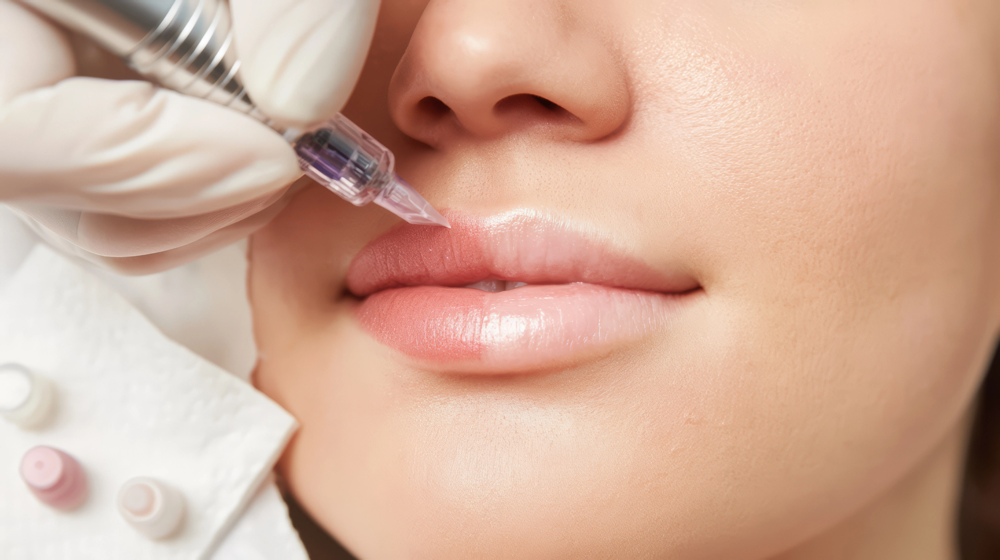

Day 1
Colour can look fresh and more intense. Lips may feel sensitive, and you will follow the aftercare given at your appointment.
Lip blush guide
A soft, natural lip blush result has a settling journey. The colour you see on the day is not the final finish, and the healing stage is part of how the treatment becomes beautifully wearable.
Gemma supports clients from Hull, Hessle, Beverley, Cottingham and across East Yorkshire with clear aftercare so the experience feels calm from appointment to healed result.

Healing stages
Your lips may feel tender, dry or slightly swollen at first. Colour often appears brighter immediately after treatment, then softens as the surface heals. This is normal and is one of the reasons aftercare matters.
Colour can look fresh and more intense. Lips may feel sensitive, and you will follow the aftercare given at your appointment.
Dryness and light flaking can appear. Avoid picking, rubbing or applying makeup directly to the area.
The shade softens and can look lighter before the healed colour becomes clearer over the following weeks.
Aftercare
Aftercare is deliberately simple: keep the area clean, avoid unnecessary friction and follow the personalised guidance given by Gemma. The aim is to let the lips heal without disturbing the pigment.
If you are still deciding whether the treatment is right for you, the main lip blush treatment page explains suitability, pricing and the appointment process.
FAQ
Most clients notice the lips settling over the first week, with the colour continuing to soften and stabilise over the following weeks.
Yes. The colour can look brighter immediately after treatment before softening as the lips heal.
Avoid applying makeup directly to the lips during the early healing stage. Gemma will explain when it is suitable to return to lip products.
Plan with confidence
Book a consultation for tailored advice, or read about how long lip blush lasts before choosing your appointment.